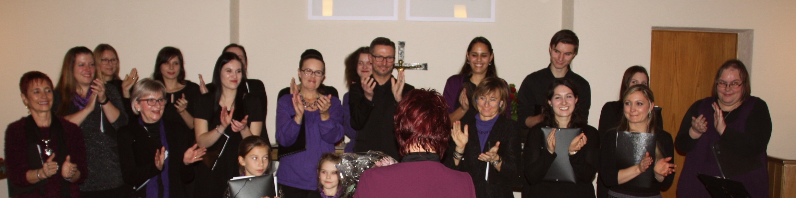

<div class="container-fluid">
  <div class="row">
    <div class="col-lg-8 container shadow rounded" style="background-color: rgba(255, 255, 255, 0.952);">
        <div>
          <h2 class="display-4">Über uns...</h2>
        </div >

        <div class="text-center">
          
        </div>
          <div class="font-weight-light">
            <div>Ton-Art: Schl&auml;fst du nooder singst du schon?</div>
            <br /><br />
            <div>Sehr sch&ouml;n! Du bist auf unserer Seite gelandet. Grund genug, uns mal schnell ein bisschen vorzustellen:</div>
            <br /><br /><br />
            <div>Wir sind aus dem Jugendchr des GV Bruderbund Untergrombach 1906 e.V. entstanden. Nach Aufl&ouml;sung des gro&szlig;en Chores, wurden wir zu den Hauptakteuren des Vereins.</div>
            <br />
            <div>Schwierig in kurzen und ein paar knappen S&auml;tzen zu beschreiben, wie wir so drauf sind. Also eigentlich sind wir eine bunt zusammengew&uuml;rfelte Truppe, die sich immer wieder samstags zum fr&ouml;hlichen Singen und Spa&szlig; haben trifft.</div>
            <br />
            <div>Bunt zusammengew&uuml;rfelt deshalb, weil bei uns einfach alles vertreten ist.</div>
            <br />
            <div>Ob jung oder jung geblieben, schlank oder wohl proportioniert, vorlaut oder zur&uuml;ckhaltend, tiefe Stimmen, hohe Stimmen, M&auml;nnlein oder Weiblein, wir kommen alle gut miteinander aus und freuen uns nat&uuml;rlich &uuml;ber jeden, der frischen Wind in unsere Truppe bringt.</div>
            <br />
            <div>Was wir so singen? So ziemlich alles was uns unter die Finger kommt. Im Grunde ist f&uuml;r jeden was dabei. Aktuelle Songs aus dem Radio, Musical-Lieder, Gospels und manchmal auch den ein oder anderen Evergreen. Wir singen unsere Lieder aber immer mehrstimmig, damit&rsquo;s mehr Spa&szlig; macht.</div>
            <br /><br /><br />
            <div>Singen steht bei uns nat&uuml;rlich an allererster Stelle. Auftritte und Konzerte, f&uuml;r die wir flei&szlig;ig &uuml;ben m&uuml;ssen, stehen genauso auf dem Programm, wie regelm&auml;&szlig;ige Gemeinschaftspflege im Form von Ausfl&uuml;gen, Vereinsfesten und anderen Aktionen. Dabei steht alles unter der Devise: Geht nicht, gibt&rsquo;s nicht!</div>
            <br />

          <div class="jumbotron">
            <div>Schau doch einfach mal samstags ganz unverbindlich vorbei und wecke den S&auml;nger in dir. Wir freuen uns &uuml;ber jeden, der Spa&szlig; am Singen hat!</div>
            <br /><br /><br />
            <div>Wo? Im Giebelzimmer der evangelischen Kirche in Untergrombach</div>
            <br />
            <div>Wann? Immer samstags, von 14.30 Uhr &ndash; 16.00 Uhr</div>
            <br />
            <div>Wer? Jeder der Lust und Talent zum Singen hat.</div>
            <br /><br /><br />
            <div>Noch irgendwas unklar? Dann meld dich einfach über unser Kontaktformular (unter Kontakt auf der Homepage) und frag uns L&ouml;cher in den Bauch.</div>
            </div>
          </div>
    </div>

    <div class="col-lg-4">
      <app-werbung></app-werbung>
    </div>
